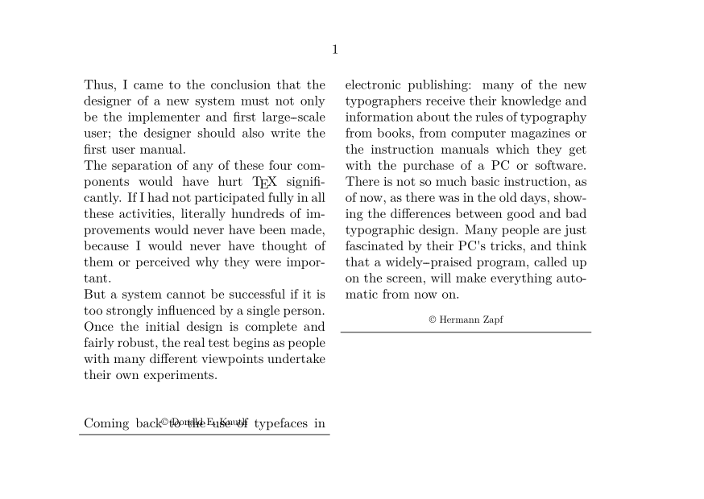
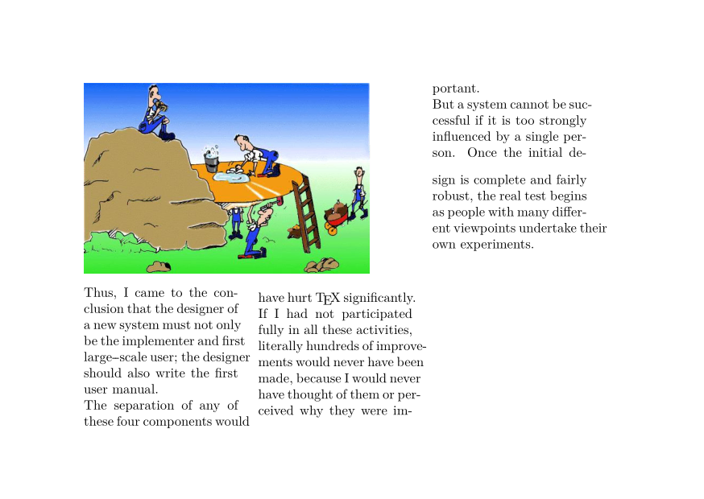
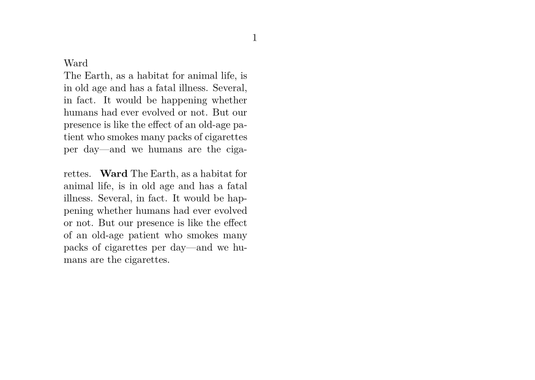
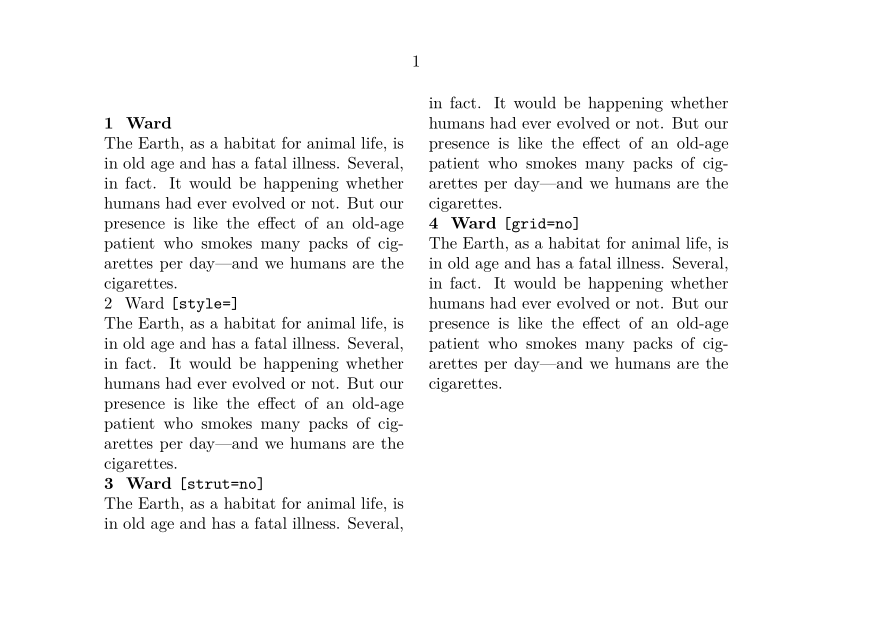

Contents
Summary
The environment \startcolumnset ... \stopcolumnset is used for material in columns.
Settings
| \startcolumnset[...][...=...,...] ... \stopcolumnset | |
| [...] | name |
| ...=...,... | inherits from \setupcolumnset |
Description
Start a column environment using the columnset mechanism.
Examples
Example 1
-
\starttext \setuppapersize[A6,landscape] \definecolumnset[TwoColumns][n=2] \startcolumnset [TwoColumns] \startalignment[justified,verytolerant] \input knuth \blank \framed [frame=off, bottomframe=on, width=\textwidth, frameoffset=1mm, foregroundstyle=small, ]{\copyright\ Donald E. Knuth} \input zapf \blank \framed [frame=off, bottomframe=on, width=\textwidth, frameoffset=1mm, foregroundstyle=small, ]{\copyright\ Hermann Zapf} \stopalignment \stopcolumnset \stoptext
- 
Overlapping lines problems
Using columnsets may cause overlapping lines at the end of columns.
To avoid this, \setuplayout[grid=yes] must be placed in the preamble of the document.
-
\setuppapersize[A6,landscape] \definecolumnset[example][n=3,balancing=no] \definecolumnsetspan[wide][n=2] \setupexternalfigures[location=default] \setuplayout[grid=yes] % Without this, last lines in the first column overlap % \starttext \noheaderandfooterlines \startcolumnset[example] \startcolumnsetspan[wide] \externalfigure[hacker][width=60mm] \stopcolumnsetspan \input knuth \stopcolumnset \stoptext
- 
Empty lines problems
The new column set and mixed columns environments use grid snapping by default which can result in blank lines in the output. See the problem here:
-
%\showboxes \setuppapersize[A6,landscape] \starttext \startcolumns[balance=no] \snaptogrid[]\hbox{\setstrut\begstrut Ward\endstrut} \samplefile{ward} \snaptogrid[]\hbox{\bf\setstrut\begstrut Ward\endstrut} \samplefile{ward} \stopcolumns \stoptext
- 
Two simple ways to get rid of the blank line are:
- to disable the strut for the section or
- to disable the grid snapping for the section.
See the solutions here:
-
%\showboxes \setuppapersize[A6,landscape] \setuphead[section][before=,after=] \setuphead[section][style=bold] \define[1]\Sample {\begingroup \setuphead[section][#1] \section{Ward \doifsomething{#1}{\tttf [#1]}} \samplefile{ward}\par \endgroup} \starttext \startcolumns[balance=no] \Sample{} \Sample{style=} \Sample{strut=no} \Sample{grid=no} \stopcolumns \stoptext
- 
Notes
See also
- \definecolumnset
- \setupcolumnset
- page-cst.mkiv
- \startcolumns for an alternative column mechanism